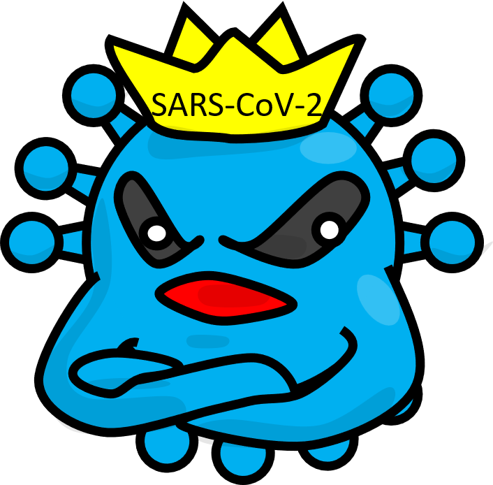

コロナウイルスによる感染症。パンデミックを経て今も変化し続けています。ウイルスの仕組みとワクチン・治療薬についてわかりやすく解説します。
SARS-CoV-2の構造、診断法（NAAT vs 抗原検査）、抗ウイルス薬、オミクロン亜系統の免疫回避、mRNAワクチンの更新を解説します。
スパイク蛋白-ACE2機序、Mpro/RdRp耐性変異、オミクロン免疫回避の分子基盤、IDSA 2025治療ガイドライン、ACIP 2024-25ワクチン推奨を概説する。

COVID-19（コビッド・ナインティーン）は、コロナウイルスの一種「SARS-CoV-2」によって起きる感染症です。2019年末に中国・武漢で初めて確認されました。
SARS-CoV-2の表面には「スパイク蛋白」という突起があります。これが人の細胞にある「ACE2」という鍵穴にはまると、ウイルスが細胞の中に侵入します。
ウイルスの表面のトゲ。「鍵」の役割。ワクチンで免疫をつける主な標的でもある。
人の細胞（肺・気道）にある「鍵穴」。スパイク蛋白がここにはまると感染が始まる。
コロナウイルス科・ベタコロナウイルス属に属するエンベロープ付き一本鎖プラス鎖RNAウイルス。ゲノムサイズ約30 kb（RNAウイルスとして最大級）。表面のスパイク蛋白（S）がACE2受容体に結合して侵入する。
仲間のコロナウイルス：SARS-CoV（2002-03）・MERS-CoV（2012-）・季節性コロナウイルス4種（軽症上気道炎の原因）。SARS-CoV-2はSARS-CoVと約79%の遺伝子配列相同性。
ゲノムは約29.9 kbの一本鎖プラス鎖RNA（5'キャップ・3'ポリA）。ORF1a/bがpp1a/pp1ab（非構造タンパク質1〜16：RdRp・ヘリカーゼ・エキソリボヌクレアーゼ等）をコード。構造タンパク質遺伝子：S（スパイク）・E（エンベロープ）・M（膜）・N（核）。スパイクはS1/S2にフリン切断部位（PRRA挿入：SARS-CoVにはなくSARS-CoV-2固有）→増強型細胞融合。
S蛋白RBD（残基319〜541）がACE2 PD（peptidase domain）に結合。SARS-CoVに比べKD=4.7 nM vs 325 nM（約70倍高親和性）。ACE2発現細胞でのTMPRSS2・カテプシンB/L依存的S蛋白活性化後、エンドソーム経由/膜直接融合で侵入。
潜伏期間2〜5日（オミクロン以降短縮傾向：約2〜3日）。軽症〜中等症が大多数だが、重症化リスク因子保有者では致命的経過をたどりうる。
高齢・肥満（BMI≥30）・糖尿病・心血管疾患・慢性肺疾患・CKD・悪性腫瘍・免疫抑制状態（臓器移植・ステロイド長期・抗CD20療法等）。
発症4週以降も症状が持続（倦怠感・ブレインフォグ・動悸・呼吸困難・嗅覚障害）。機序は多因子（持続ウイルス抗原・自己免疫・微小血管障害等）。オミクロン以降頻度は低下傾向。
重症COVID-19はウイルス増殖期（発症1〜7日）と免疫応答期（7〜14日以降）の二相性病態。後期の低酸素血症・ARDS主因はウイルス直接障害よりもサイトカイン介在性（IL-6・TNF-α・IL-1β・IFN-γ）の肺血管内皮障害・血栓形成・アルベオール浸潤。
デキサメタゾン6 mg/日（RECOVERY trial：死亡率RR 0.83、人工呼吸患者でRR 0.64）がウイルス血症期後の炎症期を標的。Baricitinib（JAK1/2阻害）・Tocilizumab（IL-6R阻害）が追加免疫調整として有効（ACTT-2・REMAP-CAP）。
✅ 最も正確
ウイルスのRNAを検出
感度・特異度ともに非常に高い
発症早期でも検出可能
✅ 素早く結果がわかる（約15分）
ウイルスのタンパク質を検出
⚠️ PCRより感度が低い
ウイルスが少ない時期は偽陰性
| 検査法 | 感度 | 特異度 | TAT | 特徴 |
|---|---|---|---|---|
| NAAT（RT-PCR標準） | >95% | >99% | 1〜8時間 | ゴールドスタンダード。亜型判定可 |
| 迅速分子検査（RMAT） | >95% | >99% | 15〜30分 | 外来でのNAAT代替。POCT対応 |
| 抗原検査（症状あり） | 81% | >99% | 約15分 | ウイルス量多い時期に有用 |
| 抗原検査（症状なし） | 41% | >99% | 約15分 | スクリーニングには不向き |
| 抗原検査×2回（5日以内） | 98% | 100% | 連続検査 | 2回陰性でNAATと同等の除外能 |
| 多重パネル（Flu+COVID+RSV） | 高い | 高い | 1〜2時間 | 同時流行期に有用 |
Hayden et al.（CID 2024 IDSA）：NAAT（感度>95%・特異度>99%）がゴールドスタンダード。抗原検査は症状例で感度81%（Ct値<30の高ウイルス量例では感度向上）、無症状例で41%（特異度>99%）。連続2回検査（5日以内）で感度98%・特異度100%（NAATと同等）。
Ct値の臨床的意義：Ct値<25が感染性ウイルス（viral culture陽性）と相関。Ford et al.（CID 2021）：Ct<30でsubgenomic RNA検出率・培養陽性率が高い。症状発症5日以降・ウイルス量低下後の抗原検査陰性は感染性消失の指標として有用（免疫不全者を除く）。
ウイルスの「はさみ（プロテアーゼ）」を止める薬。飲み薬で5日間服用。
発症5日以内ウイルスのRNA複製を止める薬。点滴で3日間投与。
発症5日以内ウイルスのRNAに変異を起こして増殖を抑える薬。飲み薬。
他の薬が使えない時Mproを阻害。高リスク患者に強く推奨。eGFR 30〜60で減量（NMV 150 mg）。
薬剤相互作用：リトナビルによるCYP3A4阻害。クロピドグレル（禁忌）・タクロリムス・シクロスポリン（TDM要）等に注意。
RdRpを阻害。3日間点滴（外来でも可）。高リスク患者に強推奨。eGFR<30でも使用可（添加物eGFR<30は慎重）。
致死的変異誘発によるRNA複製抑制。他の薬が使えない高リスク患者に条件付き推奨。妊娠中は禁忌。
すべての抗ウイルス薬は発症5日以内の開始が必要。重症化リスクのある患者は症状出現後できるだけ早く開始を検討。
ニルマトレルビル（PF-07321332）：SARS-CoV-2 Mpro（nsp5/3CLpro）の活性部位Cys145-His41触媒二分子への共有結合的可逆阻害（αケトアミド系薬剤）→ポリプロテイン切断不能→非構造タンパク質産生停止→ウイルス複製停止。EPIC-HR試験：入院・死亡リスク89%低減。eGFR<30では使用不可。リトナビル（CYP3A4阻害）によるブースティングでNMVの血漿半減期延長（3.7h→6.6h）。
レムデシビル（GS-5734）：アデノシンヌクレオチド類似体プロドラッグ→細胞内でGS-443902（三リン酸体）に活性化→RdRp（nsp12）への取り込み後、遅延鎖終止（delayed chain termination）→RNA複製途絶。エキソリボヌクレアーゼ（nsp14）による校正切除を部分的に回避。3日間静脈投与（外来プロトコル：Gilead）。
モルヌピラビル：β-D-N4-ヒドロキシシチジン（NHC）トリリン酸体がRdRpに取り込まれ鋳型RNA上で転換→致死的ウイルス変異頻度増加（error catastrophe）。変異原性・生殖毒性の懸念から優先度は低い（IDSA：条件付き推奨）。Lau et al.ネットワークメタ解析（IRV 2024）では入院・死亡RR低減はNMV-r > RDV > Molnupiravir。
SARS-CoV-2はRNAウイルスなので、増える度に少しずつ変化します。主要な変異株の流れを見てみましょう。
オミクロン株（B.1.1.529）はデルタ株の4変異に対してスパイク蛋白に50以上の変異（うち30以上がRBD/NTD）を持ち、ワクチン・感染由来の中和抗体から大幅な回避能を獲得した（Barouch, NEJM 2022）。
オミクロン系統の急速分岐はRBDへの収斂進化（convergent evolution）が顕著。主要な中和エピトープクラス（I〜IV）への変異蓄積で広域中和を回避。ACE2親和性とワクチン回避のトレードオフが見られたが（F486V→ACE2↓・R493Q復帰→ACE2↑）、適応的補償変異で両立を達成した（Kimura et al., Cell 2022）。
XBB系統（XBB.1.5・XBB.1.16）はモノクローナル抗体（バムラニビマブ・ソトロビマブ等）ほぼ全品にも耐性を示し、2023年以降抗体製剤の多くが適応外となった。JN.1（BA.2.86派生：スパイクに30以上の追加変異）は2023末-24年に世界的優勢株に。KP.2はJN.1にF456L等の追加変異を持ち免疫回避がさらに強化。
COVID-19ワクチンの多くはmRNAワクチンという新しい技術を使っています。ウイルスの「設計図（mRNA）」を体に届けて、自分の体にスパイク蛋白を一時的に作らせ、免疫を準備させます。
mRNAワクチン（Moderna mRNA-1273・Pfizer-BioNTech BNT162b2）はスパイク蛋白mRNAを脂質ナノ粒子（LNP）に封入して筋注。2022年9月より2価ワクチン（祖先株+BA.4/5）が導入され、2023年9月から単一オミクロン対応（XBB.1.5）、2024-25年からKP.2/JN.1対応ワクチンへ更新（ACIP, MMWR 2024）。
症状あり感染への相対ワクチン有効性：最終単価接種から2〜3か月後比30〜31%・8か月以上後比43〜56%（Link-Gelles et al., MMWR 2022）。死亡率：2価ブースター接種者は未接種者比14.1倍低下（Johnson et al., MMWR 2023）。
2価ブースター効果は接種後数週間でピーク、その後5か月で徐々に低下（Lin et al., NEJM 2023）。重症化予防効果は発症予防より長期間持続。6か月以上のすべての人への毎年接種を推奨（ACIP 2024）。
mRNAワクチンのLNP-mRNA複合体は筋肉内注射後、局所の抗原提示細胞（DC）に取り込まれ、スパイク蛋白を一過性に産生（数日〜2週）→CD4+T細胞・B細胞の濾胞性応答→胚中心反応→形質細胞・記憶B細胞分化。抗RBD IgG（中和抗体）は接種後2〜4週にピーク→4〜6か月で顕著に低下（Barouch, NEJM 2022）。記憶B細胞はより長期間持続し、再暴露時に迅速なアナムネスティック応答を示す。
2024-25年更新ワクチン（ACIP、MMWR 2024）：Moderna（mRNA-1273.815：KP.2対応）・Pfizer-BNT（BNT162b2：KP.2対応）・Novavax（NVX-CoV2705：JN.1対応タンパク系）。6か月以上全員に毎年1回接種。免疫不全者は追加接種を検討。コクランレビュー等での重症化予防効果は依然高い。
COVID-19の治療薬にも、ウイルスが変化して効きにくくなる「耐性」が起きることがあります。ただし、現在のところ耐性は免疫が低下している患者さんで長期治療が続く場合に多く、一般的には稀です。
活性部位S1・S4サブサイト変異が阻害剤結合を阻害。S2・S4'サブサイト変異は逆にプロテアーゼ活性を増加させる（補償的メカニズム：Duan et al., Nature 2023）。EPIC-HR試験での出現率0.3%（免疫抑制患者で多い）。
V792I・E802D変異が代表。免疫不全患者での長期持続感染で選択されやすい。NMV-rとRDVの順次投与後に二重耐性変異（nsp5 T169I + nsp12 V792I）が出現した例あり（Nooruzzaman et al., Nat Commun 2024）。
ニルマトレルビル耐性（Duan et al., Nature 2023）：Mpro（3CLpro）活性部位はCys145-His41触媒二分子＋4つのサブサイト（S1〜S4・S1'〜S4'）で構成。S1（E166V等）・S4（Arg298変異等）の変異が阻害剤のP1〜P4位との接触を減少→IC₅₀上昇。一方S2・S4'変異は触媒活性を逆に増加させ、S1変異による活性低下を補償→両メカニズムの複合でウイルス複製適応度が回復した耐性株が選択される。
レムデシビル耐性：V792IはRdRp（nsp12）のモーチーフC（GDD触媒トリアド付近）に位置し、GS-443902の取り込み効率を低下。E802Dはモーチーフ上流の構造変化を誘導。nsp14エキソリボヌクレアーゼ（proofreading）活性との相互作用も耐性に寄与する可能性（Tamura et al., JAMA Netw Open 2024）。
複合耐性（Nooruzzaman et al., Nat Commun 2024）：免疫抑制患者の持続感染でnsp5（T169I）+nsp12（V792I）二重変異株が分離。in vitroでNMV-r・RDV両方に感受性低下。ゴールデンシリアンハムスターモデルで接触感染伝播が実証された。